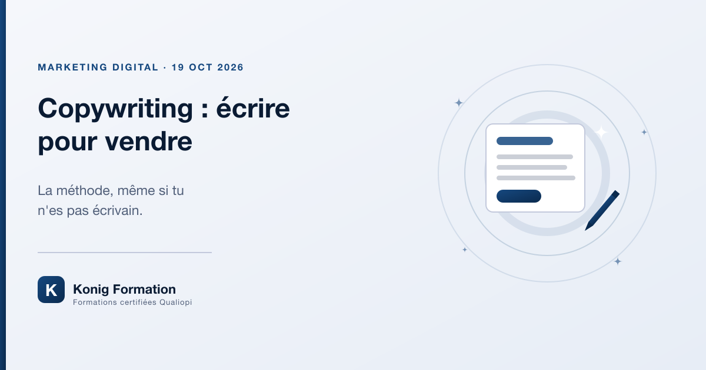
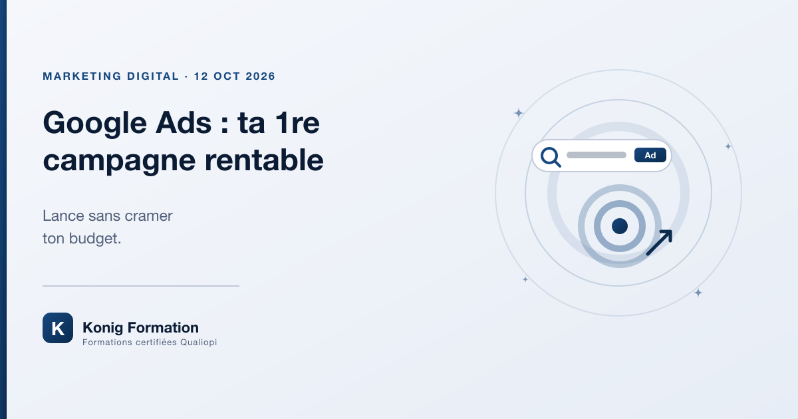
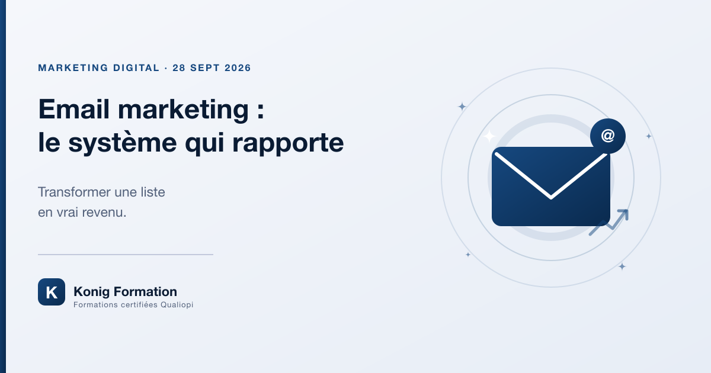
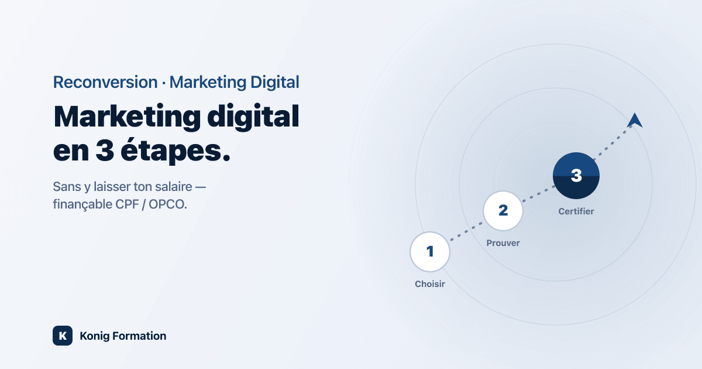

Marketing Digital
Les articles du blog consacrés à : marketing digital.

Marketing : les KPIs qui comptent vraiment (arrête de deviner, mesure ce qui rapporte)
Mesurer son marketing avec les bons KPIs : un indicateur par objectif, le coût d'acquisition vs valeur client, et les vanity metrics à ignorer.
Lire l’article
La preuve sociale : le levier qui fait vendre sans forcer (avis, chiffres, cas clients)
La preuve sociale : le levier qui fait vendre sans forcer. Avis, chiffres, notoriété, études de cas — comment les récolter et où les afficher.

Le tunnel de vente qui amène des clients (attirer, capturer, convertir, fidéliser)
Le tunnel de vente étape par étape : attirer, capturer, convertir, fidéliser. Transforme ton audience en clients de façon prévisible.

Copywriting : la méthode pour écrire des textes qui vendent (même si tu n’es pas écrivain)
Écrire pour vendre, ça s'apprend : bénéfices vs caractéristiques, structure AIDA, titres qui accrochent, un seul appel à l'action. La méthode copywriting.

Google Ads pour débutants : lance ta première campagne rentable sans cramer ton budget
Google Ads pour débutants : lance ta première campagne rentable sans gaspiller. Objectif, mots-clés, ciblage, enchères et suivi des conversions.

Vidéo courte : le système pour générer des clients avec Reels, TikTok et Shorts (sans studio)
Vidéo courte : le système pour générer des clients avec Reels, TikTok et Shorts, sans studio. 4 étapes : piliers, accroche, format, recyclage.

L’email marketing n’est pas mort : le système pour transformer une liste en revenus
L'email marketing n'est pas mort : le système en 4 étapes pour transformer une liste en revenus (aimant, séquence de bienvenue, rythme, segmentation).

LinkedIn : le système en 5 étapes pour transformer ton profil en machine à opportunités
Le système LinkedIn en 5 étapes pour te faire connaître et attirer des clients sans y passer ta vie : profil, contenu, cadence, engagement.

SEO + IA : le parcours en 90 jours pour devenir opérationnel en marketing digital
SEO + IA : un parcours en 90 jours pour devenir opérationnel en marketing digital, même en partant de zéro. 3 étapes concrètes et les pièges à éviter.

Se reconvertir dans le marketing digital en 3 étapes en 2026 (sans y laisser ton salaire)
Tu sens que ton poste tourne en rond, tu regardes le marketing digital de loin en te disant « c’est pour les autres » ? Faux. C’est l’un des r
Prêt à passer à la pratique ?
Besoin d’aide pour choisir votre formation ? Notre équipe vous accompagne dans le choix de la formation idéale et dans vos démarches de financement (CPF, OPCO, FAF, France Travail).